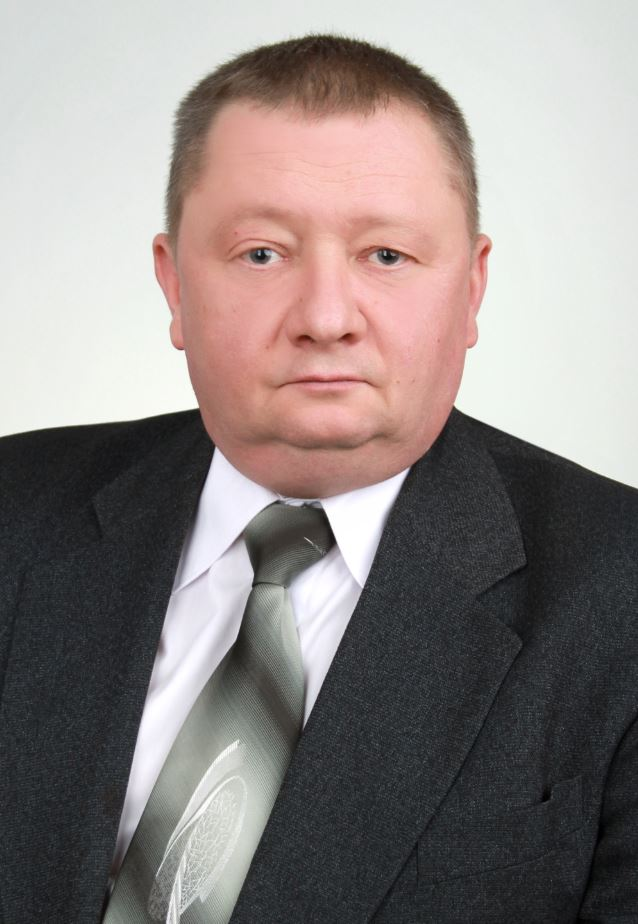
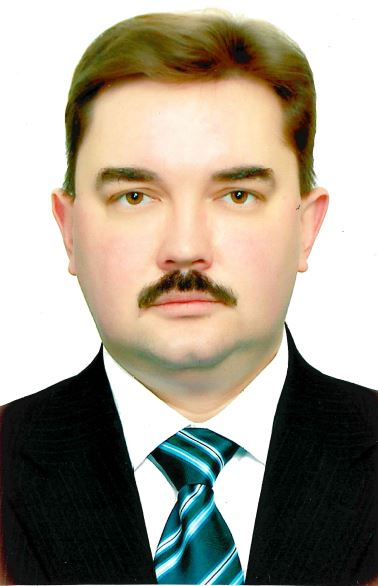
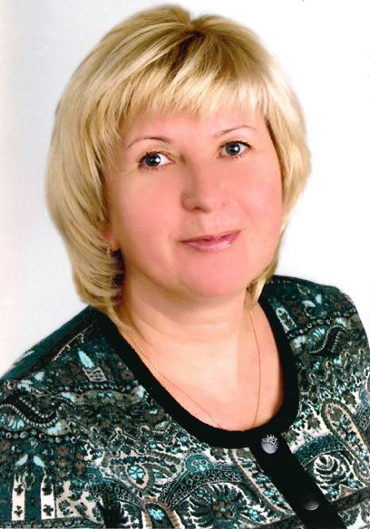

Администрация
Матусевич Евгений Анатольевич
Главный врач
Каштанов Алексей Михайлович
Заместитель главного врача по медицинской части
Салмин Илья Михайлович
Заместитель главного врача по хирургической работе
Грунтова Наталья Михайловна
Заместитель главного врача по экспертизе и реабилитации
Масловская Марина Владимировна
Заместитель главного врача по терапевтической службе

Петранис Николай Чеславович
Заместитель главного врача по медицинской части для работы по ГО и мобилизационной работе

Патриваев Дмитрий Евгеньевич
Заместитель главного врача по безопасности, режиму и кадрам

Гапанович Алексей Леонидович
Заместитель главного врача по организационно методической работе

Воронко Алла Васильевна
Главная медицинская сестра